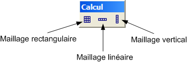

La barre d'outils Infrastructure est active uniquement avec les modeleurs de site ou projet, comportant un calcul courant.
Cet outils permet de créer
un maillage rectangulaire horizontal, à partir de la vue de dessus.
Le maillage va épouser
la forme de la topographie avec un offset en altitude paramétrable.
La densité de point
est aussi controlable, à la fois en X et en Y.
Cet outils permet de créer
un maillage linéaire horizontal, sous forme d'une polyligne, à
partir de la vue de dessus.
Le maillage va épouser la forme
de la topographie avec un offset en altitude paramétrable.
La densité de point
par unité de longueur est aussi controlable.
Cet outils permet de créer
un maillage rectangulaire vertical, à partir de la vue de dessus (pour
placer devant un mur par exemple).
Le maillage va épouser
la forme de la topographie avec un offset en altitude paramétrable.
La densité de point
est aussi controlable, à la fois en X et en Y.